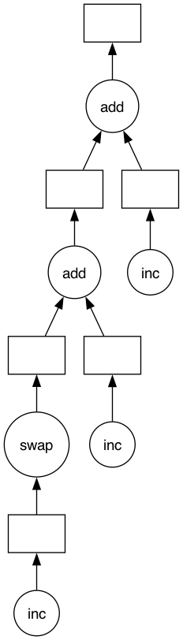
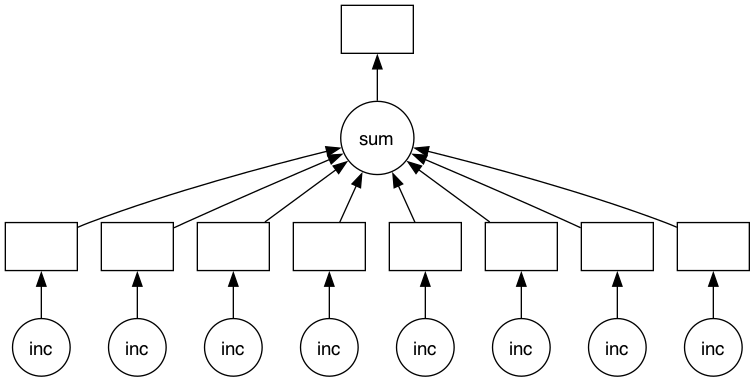
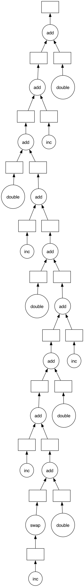
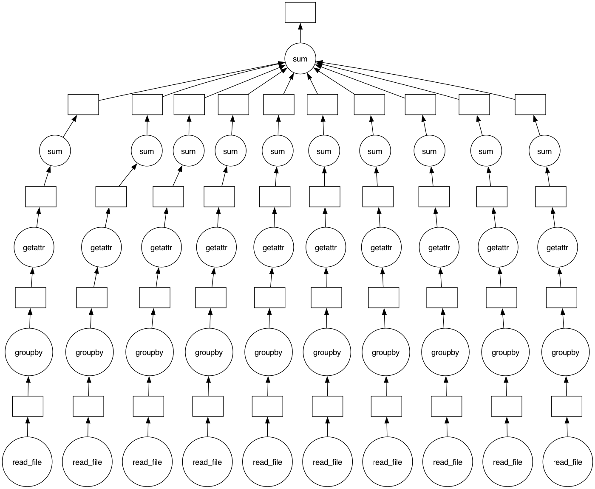
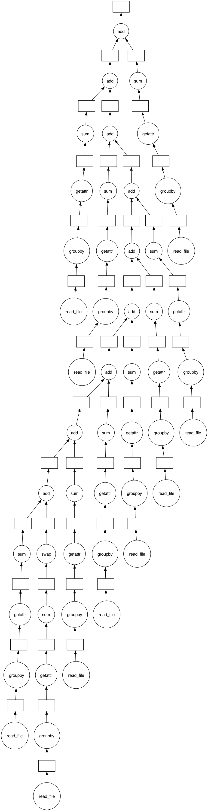

What if you don’t have an array or dataframe? Instead of having blocks where the function is applied to each block, you can decorate functions with @delayed and have the functions themselves be lazy.
This is a simple way to use dask to parallelize existing codebases or build complex systems.
As we’ll see in the distributed scheduler notebook, Dask has several ways of executing code in parallel. We’ll use the distributed scheduler by creating a dask.distributed.Client. For now, this will provide us with some nice diagnostics. We’ll talk about schedulers in depth later.
Iniatilization of the ipyparallel/dask interface
Code
from dask.distributed import LocalClustercluster = LocalCluster(n_workers=8, threads_per_worker=1) # Fully-featured local Dask clusterclient = cluster.get_client()client
Local directory: /var/folders/p0/pqx517ld19nf9ybmf7rbv4bc0000gn/T/dask-scratch-space/worker-hz2h1ad2
A Typical Workflow
Typically if a workflow contains a for-loop it can benefit from delayed. The following example outlines a read-transform-write:
import dask@dask.delayeddef process_file(filename): data = read_a_file(filename) data = do_a_transformation(data) destination =f"results/{filename}" write_out_data(data, destination)return destinationresults = []for filename in filenames: results.append(process_file(filename))dask.compute(results)
Basics
First let’s make some toy functions, inc and add, that sleep for a while to simulate work. We’ll then time running these functions normally.
In the next section we’ll parallelize this code.
Code
from time import sleepdef inc(x): sleep(1)return x +1def add(x, y): sleep(1)return x + y
We time the execution of this normal code using the %%time magic, which is a special function of the Jupyter Notebook.
Code
%%time# This takes three seconds to run because we call each# function sequentially, one after the otherx = inc(1)y = inc(2)z = add(x, y)
CPU times: user 135 ms, sys: 81.5 ms, total: 216 ms
Wall time: 3.01 s
Parallelize with the dask.delayed decorator
Those two increment calls could be called in parallel, because they are totally independent of one-another.
We’ll make the inc and add functions lazy using the dask.delayed decorator. When we call the delayed version by passing the arguments, exactly as before, the original function isn’t actually called yet - which is why the cell execution finishes very quickly. Instead, a delayed object is made, which keeps track of the function to call and the arguments to pass to it.
Code
import dask@dask.delayeddef inc(x): sleep(1)return x +1@dask.delayeddef add(x, y): sleep(1)return x + y
Code
%%time# This runs immediately, all it does is build a graphx = inc(1)y = inc(2)z = add(x, y)
CPU times: user 460 μs, sys: 210 μs, total: 670 μs
Wall time: 656 μs
This ran immediately, since nothing has really happened yet.
To get the result, call compute. Notice that this runs faster than the original code.
Code
%%time# This actually runs our computation using a local thread poolz.compute()
CPU times: user 112 ms, sys: 62 ms, total: 174 ms
Wall time: 2.03 s
5
What just happened?
The z object is a lazy Delayed object. This object holds everything we need to compute the final result, including references to all of the functions that are required and their inputs and relationship to one-another. We can evaluate the result with .compute() as above or we can visualize the task graph for this value with .visualize().
Notice that this includes the names of the functions from before, and the logical flow of the outputs of the inc functions to the inputs of add.
Some questions to consider:
Why did we go from 3s to 2s? Why weren’t we able to parallelize down to 1s?
What would have happened if the inc and add functions didn’t include the sleep(1)? Would Dask still be able to speed up this code?
What if we have multiple outputs or also want to get access to x or y?
Exercise: Parallelize a for loop
for loops are one of the most common things that we want to parallelize. Use dask.delayed on inc and sum to parallelize the computation below:
Code
data = [1, 2, 3, 4, 5, 6, 7, 8]
Code
%%time# Sequential codedef inc(x): sleep(1)return x +1results = []for x in data: y = inc(x) results.append(y)total =sum(results)
CPU times: user 367 ms, sys: 226 ms, total: 593 ms
Wall time: 8.02 s
Code
total
44
Code
%%time# Your parallel code here...
CPU times: user 2 μs, sys: 1 μs, total: 3 μs
Wall time: 5.01 μs
Code
%%time@dask.delayeddef inc(x): sleep(1)return x +1results = []for x in data: y = inc(x) results.append(y)total = dask.delayed(sum)(results)print("Before computing:", total) # Let's see what type of thing total isresult = total.compute()print("After computing :", result) # After it's computed
Before computing: Delayed('sum-2e99c6d8-4f13-45ad-b55b-d87c84c3b9f4')
After computing : 44
CPU times: user 60.4 ms, sys: 33.8 ms, total: 94.2 ms
Wall time: 1.02 s
How do the graph visualizations compare with the given solution, compared to a version with the sum function used directly rather than wrapped with delayed? Can you explain the latter version? You might find the result of the following expression illuminating
inc(1) + inc(2)
Code
(inc(1) + inc(2)).visualize()
Code
sum([inc(1),inc(2),inc(3)]).visualize()

Code
total.visualize()

Putting it all together with a the producer-consumer pattern
Introduction with a simple producer-consumer example
We’ll try to reproduce the producer/consumer code from asynchronous application with asyncio or threading but with dask.delayed and compute
from dask import delayed, computefrom dask.distributed import Queue, printfrom time import sleepqueue = Queue()...
Code
from dask import delayed, computefrom dask.distributed import Queue, printfrom time import sleepqueue = Queue()@delayeddef produce(queue, n):print("producing {} items".format(n))for x inrange(1, n +1):# simulate i/o operation using sleep sleep(1)# produce an itemprint("producing {}/{}".format(x, n)) item =str(x)# put the item in the queue queue.put(item)# indicate the producer is done queue.put(None)return n@delayeddef consume(queue): consumed =0print("consuming items")whileTrue:# wait for an item from the producer item = queue.get()if item isNone:# the producer emits None to indicate that it is donebreak# process the itemprint("consuming {}".format(item)) consumed +=1return consumedcompute( produce(queue, 5), consume(queue))
(5, 5)
Exercise: Parallelize a for-loop code with control flow
Often we want to delay only some functions, running a few of them immediately. This is especially helpful when those functions are fast and help us to determine what other slower functions we should call. This decision, to delay or not to delay, is usually where we need to be thoughtful when using dask.delayed.
In the example below we iterate through a list of inputs. If that input is even then we want to call inc. If the input is odd then we want to call double. This is_even decision to call inc or double has to be made immediately (not lazily) in order for our graph-building Python code to proceed.
%%time# Sequential coderesults = []for x in data:if is_even(x): y = double(x)else: y = inc(x) results.append(y)total =sum(results)print(total)
90
CPU times: user 461 ms, sys: 371 ms, total: 832 ms
Wall time: 10 s
%%time# Your parallel code here...# TODO: parallelize the sequential code above using dask.delayed# You will need to delay some functions, but not all
Code
@dask.delayeddef double(x): sleep(1)return2* x@dask.delayeddef inc(x): sleep(1)return x +1results = []for x in data:if is_even(x): # even y = double(x)else: # odd y = inc(x) results.append(y)total =sum(results)
Code
%time total.compute()
CPU times: user 100 ms, sys: 70.9 ms, total: 171 ms
Wall time: 2.04 s
90
Code
total.visualize()

Some questions to consider:
What are other examples of control flow where we can’t use delayed?
What would have happened if we had delayed the evaluation of is_even(x) in the example above?
What are your thoughts on delaying sum? This function is both computational but also fast to run.
Example of control flow with we can’t use delayed : conditional loops, recursive functions
Nothing, we have to compute it immediately for branching
Delaying sum isn’t worth the graph walk overload
Exercise: Parallelize a Pandas Groupby Reduction
In this exercise we read several CSV files and perform a groupby operation in parallel. We are given sequential code to do this and parallelize it with dask.delayed.
The computation we will parallelize is to compute the mean departure delay per airport from some historical flight data. We will do this by using dask.delayed together with pandas. In a future section we will do this same exercise with dask.dataframe.
Create data
Run this code to prep some data.
This downloads and extracts some historical flight data for flights out of NYC between 1990 and 2000. The data is originally from here.
%%timesums = []counts = []for fn in filenames:# Read in file df = pd.read_csv(fn)# Groupby origin airport by_origin = df.groupby("Origin")# Sum of all departure delays by origin total = by_origin.DepDelay.sum()# Number of flights by origin count = by_origin.DepDelay.count()# Save the intermediates sums.append(total) counts.append(count)# Combine intermediates to get total mean-delay-per-origintotal_delays =sum(sums)n_flights =sum(counts)mean = total_delays / n_flights
CPU times: user 1.1 s, sys: 174 ms, total: 1.27 s
Wall time: 1.25 s
Use dask.delayed to parallelize the code above. Some extra things you will need to know.
Methods and attribute access on delayed objects work automatically, so if you have a delayed object you can perform normal arithmetic, slicing, and method calls on it and it will produce the correct delayed calls.
Calling the .compute() method works well when you have a single output. When you have multiple outputs you might want to use the dask.compute function. This way Dask can share the intermediate values.
So your goal is to parallelize the code above (which has been copied below) using dask.delayed. You may also want to visualize a bit of the computation to see if you’re doing it correctly.
%%time# your code here
Code
%%time# This is just one possible solution, there are# several ways to do this using `dask.delayed`@dask.delayeddef read_file(filename):# Read in filereturn pd.read_csv(filename)sums = []counts = []for fn in filenames:# Delayed read in file df = read_file(fn)# Groupby origin airport by_origin = df.groupby("Origin")# Sum of all departure delays by origin total = by_origin.DepDelay.sum()# Number of flights by origin count = by_origin.DepDelay.count()# Save the intermediates sums.append(total) counts.append(count)# Combine intermediates to get total mean-delay-per-origintotal_delays =sum(sums)n_flights =sum(counts)mean, *_ = dask.compute(total_delays / n_flights)
CPU times: user 35.7 ms, sys: 19 ms, total: 54.6 ms
Wall time: 499 ms
%%time# This is just one possible solution, there are# several ways to do this using `dask.delayed`@dask.delayeddef read_file(filename):# Read in filereturn pd.read_csv(filename)sums = []counts = []for fn in filenames:# Delayed read in file df = read_file(fn)# Groupby origin airport by_origin = df.groupby("Origin")# Sum of all departure delays by origin total = by_origin.DepDelay.sum()# Number of flights by origin count = by_origin.DepDelay.count()# Save the intermediates sums.append(total) counts.append(count)# Combine intermediates to get total mean-delay-per-origintotal_delays = dask.delayed(sum)(sums)n_flights = dask.delayed(sum)(counts)mean, *_ = dask.compute(total_delays / n_flights)
CPU times: user 27.6 ms, sys: 8.12 ms, total: 35.8 ms
Wall time: 346 ms
Code
dask.delayed(sum)(sums).visualize()

Code
sum(sums).visualize()

Solution. Delaying the sum could be interesting in case to make more balanced loads between tasks.
Close the Client
Before moving on to the next exercise, make sure to close your client or stop this kernel.
---title: "Dask `delayed` App"---<img src="https://docs.dask.org/en/latest/_images/dask_horizontal.svg" align="right" width="30%" alt="Dask logo\"># dask.delayed - parallelize any codeWhat if you don't have an array or dataframe? Instead of having blocks where the function is applied to each block, you can decorate functions with `@delayed` and _have the functions themselves be lazy_. This is a simple way to use `dask` to parallelize existing codebases or build [complex systems](https://blog.dask.org/2018/02/09/credit-models-with-dask). **Related Documentation*** [Delayed documentation](https://docs.dask.org/en/latest/delayed.html)* [Delayed screencast](https://www.youtube.com/watch?v=SHqFmynRxVU)* [Delayed API](https://docs.dask.org/en/latest/delayed-api.html)* [Delayed examples](https://examples.dask.org/delayed.html)* [Delayed best practices](https://docs.dask.org/en/latest/delayed-best-practices.html)As we'll see in the [distributed scheduler notebook](05_distributed.ipynb), Dask has several ways of executing code in parallel. We'll use the distributed scheduler by creating a `dask.distributed.Client`. For now, this will provide us with some nice diagnostics. We'll talk about schedulers in depth later.### Iniatilization of the ipyparallel/dask interface```{python}from dask.distributed import LocalClustercluster = LocalCluster(n_workers=8, threads_per_worker=1) # Fully-featured local Dask clusterclient = cluster.get_client()client```## A Typical WorkflowTypically if a workflow contains a for-loop it can benefit from delayed. The following example outlines a read-transform-write:```pythonimport dask@dask.delayeddef process_file(filename): data = read_a_file(filename) data = do_a_transformation(data) destination =f"results/{filename}" write_out_data(data, destination)return destinationresults = []for filename in filenames: results.append(process_file(filename))dask.compute(results)```## BasicsFirst let's make some toy functions, `inc` and `add`, that sleep for a while to simulate work. We'll then time running these functions normally.In the next section we'll parallelize this code.```{python}from time import sleepdef inc(x): sleep(1)return x +1def add(x, y): sleep(1)return x + y```We time the execution of this normal code using the `%%time` magic, which is a special function of the Jupyter Notebook.```{python}%%time# This takes three seconds to run because we call each# function sequentially, one after the otherx = inc(1)y = inc(2)z = add(x, y) ```### Parallelize with the `dask.delayed` decoratorThose two increment calls *could* be called in parallel, because they are totally independent of one-another.We'll make the `inc` and `add` functions lazy using the `dask.delayed` decorator. When we call the delayed version by passing the arguments, exactly as before, the original function isn't actually called yet - which is why the cell execution finishes very quickly.Instead, a *delayed object* is made, which keeps track of the function to call and the arguments to pass to it.```{python}import dask@dask.delayeddef inc(x): sleep(1)return x +1@dask.delayeddef add(x, y): sleep(1)return x + y``````{python}%%time# This runs immediately, all it does is build a graphx = inc(1)y = inc(2)z = add(x, y)```This ran immediately, since nothing has really happened yet.To get the result, call `compute`. Notice that this runs faster than the original code.```{python}%%time# This actually runs our computation using a local thread poolz.compute()```## What just happened?The `z` object is a lazy `Delayed` object. This object holds everything we need to compute the final result, including references to all of the functions that are required and their inputs and relationship to one-another. We can evaluate the result with `.compute()` as above or we can visualize the task graph for this value with `.visualize()`.```{python}z``````{python}# Look at the task graph for `z`z.visualize()```Notice that this includes the names of the functions from before, and the logical flow of the outputs of the `inc` functions to the inputs of `add`.### Some questions to consider:- Why did we go from 3s to 2s? Why weren't we able to parallelize down to 1s?- What would have happened if the inc and add functions didn't include the `sleep(1)`? Would Dask still be able to speed up this code?- What if we have multiple outputs or also want to get access to x or y?## Exercise: Parallelize a for loop`for` loops are one of the most common things that we want to parallelize. Use `dask.delayed` on `inc` and `sum` to parallelize the computation below:```{python}data = [1, 2, 3, 4, 5, 6, 7, 8] ``````{python}%%time# Sequential codedef inc(x): sleep(1)return x +1results = []for x in data: y = inc(x) results.append(y)total =sum(results)``````{python}total``````{python}%%time# Your parallel code here...``````{python}#| tags: [solution]%%time@dask.delayeddef inc(x): sleep(1)return x +1results = []for x in data: y = inc(x) results.append(y)total = dask.delayed(sum)(results)print("Before computing:", total) # Let's see what type of thing total isresult = total.compute()print("After computing :", result) # After it's computed```How do the graph visualizations compare with the given solution, compared to a version with the `sum` function used directly rather than wrapped with `delayed`? Can you explain the latter version? You might find the result of the following expression illuminating```pythoninc(1) + inc(2)``````{python}#| tags: [solution](inc(1) + inc(2)).visualize()``````{python}#| tags: [solution]sum([inc(1),inc(2),inc(3)]).visualize()``````{python}#| tags: [solution]total.visualize()```## Putting it all together with a the producer-consumer pattern## Introduction with a simple producer-consumer exampleWe’ll try to reproduce the producer/consumer code from asynchronous application with `asyncio` or `threading` but with `dask.delayed` and compute```pythonfrom dask import delayed, computefrom dask.distributed import Queue, printfrom time import sleepqueue = Queue()...``````{python}#| tags: [solution]from dask import delayed, computefrom dask.distributed import Queue, printfrom time import sleepqueue = Queue()@delayeddef produce(queue, n):print("producing {} items".format(n))for x inrange(1, n +1):# simulate i/o operation using sleep sleep(1)# produce an itemprint("producing {}/{}".format(x, n)) item =str(x)# put the item in the queue queue.put(item)# indicate the producer is done queue.put(None)return n@delayeddef consume(queue): consumed =0print("consuming items")whileTrue:# wait for an item from the producer item = queue.get()if item isNone:# the producer emits None to indicate that it is donebreak# process the itemprint("consuming {}".format(item)) consumed +=1return consumedcompute( produce(queue, 5), consume(queue))```## Exercise: Parallelize a for-loop code with control flowOften we want to delay only *some* functions, running a few of them immediately. This is especially helpful when those functions are fast and help us to determine what other slower functions we should call. This decision, to delay or not to delay, is usually where we need to be thoughtful when using `dask.delayed`.In the example below we iterate through a list of inputs. If that input is even then we want to call `inc`. If the input is odd then we want to call `double`. This `is_even` decision to call `inc` or `double` has to be made immediately (not lazily) in order for our graph-building Python code to proceed.```{python}def double(x): sleep(1)return2* xdef inc(x): sleep(1)return x +1def is_even(x):returnnot x %2data = [1, 2, 3, 4, 5, 6, 7, 8, 9, 10]``````{python}%%time# Sequential coderesults = []for x in data:if is_even(x): y = double(x)else: y = inc(x) results.append(y)total =sum(results)print(total)``````python%%time# Your parallel code here...# TODO: parallelize the sequential code above using dask.delayed# You will need to delay some functions, but not all``````{python}#| tags: [solution]@dask.delayeddef double(x): sleep(1)return2* x@dask.delayeddef inc(x): sleep(1)return x +1results = []for x in data:if is_even(x): # even y = double(x)else: # odd y = inc(x) results.append(y)total =sum(results)``````{python}#| tags: [solution]%time total.compute()``````{python}#| tags: [solution]total.visualize()```### Some questions to consider:- What are other examples of control flow where we can't use delayed?- What would have happened if we had delayed the evaluation of `is_even(x)` in the example above?- What are your thoughts on delaying `sum`? This function is both computational but also fast to run.- Example of control flow with we can’t use delayed : conditional loops, recursive functions- Nothing, we have to compute it immediately for branching- Delaying sum isn’t worth the graph walk overload## Exercise: Parallelize a Pandas Groupby ReductionIn this exercise we read several CSV files and perform a groupby operation in parallel. We are given sequential code to do this and parallelize it with `dask.delayed`.The computation we will parallelize is to compute the mean departure delay per airport from some historical flight data. We will do this by using `dask.delayed` together with `pandas`. In a future section we will do this same exercise with `dask.dataframe`.## Create dataRun this code to prep some data.This downloads and extracts some historical flight data for flights out of NYC between 1990 and 2000. The data is originally from [here](http://stat-computing.org/dataexpo/2009/the-data.html).```{python}import osimport requestsos.makedirs("data", exist_ok=True)code_url ="https://raw.githubusercontent.com/dask/dask-tutorial/main/prep.py"withopen("prep.py", "wb") as f: f.write(requests.get(code_url).content)%run prep.py -d flights```### Inspect data```{python}sorted(os.listdir(os.path.join("data", "nycflights")))```### Read one file with `pandas.read_csv` and compute mean departure delay```{python}import pandas as pddf = pd.read_csv(os.path.join("data", "nycflights", "1990.csv"))df.head()``````{python}# What is the schema?df.dtypes``````{python}# What originating airports are in the data?df.Origin.unique()``````{python}# Mean departure delay per-airport for one yeardf.groupby("Origin").DepDelay.mean()```### Sequential code: Mean Departure Delay Per AirportThe above cell computes the mean departure delay per-airport for one year. Here we expand that to all years using a sequential for loop.```{python}from glob import globfilenames =sorted(glob(os.path.join("data", "nycflights", "*.csv")))``````{python}filenames``````{python}%%timesums = []counts = []for fn in filenames:# Read in file df = pd.read_csv(fn)# Groupby origin airport by_origin = df.groupby("Origin")# Sum of all departure delays by origin total = by_origin.DepDelay.sum()# Number of flights by origin count = by_origin.DepDelay.count()# Save the intermediates sums.append(total) counts.append(count)# Combine intermediates to get total mean-delay-per-origintotal_delays =sum(sums)n_flights =sum(counts)mean = total_delays / n_flights``````{python}mean```### Parallelize the code aboveUse `dask.delayed` to parallelize the code above. Some extra things you will need to know.1. Methods and attribute access on delayed objects work automatically, so if you have a delayed object you can perform normal arithmetic, slicing, and method calls on it and it will produce the correct delayed calls.2. Calling the `.compute()` method works well when you have a single output. When you have multiple outputs you might want to use the `dask.compute` function. This way Dask can share the intermediate values.So your goal is to parallelize the code above (which has been copied below) using `dask.delayed`. You may also want to visualize a bit of the computation to see if you're doing it correctly.```python%%time# your code here``````{python}#| tags: [solution]%%time# This is just one possible solution, there are# several ways to do this using `dask.delayed`@dask.delayeddef read_file(filename):# Read in filereturn pd.read_csv(filename)sums = []counts = []for fn in filenames:# Delayed read in file df = read_file(fn)# Groupby origin airport by_origin = df.groupby("Origin")# Sum of all departure delays by origin total = by_origin.DepDelay.sum()# Number of flights by origin count = by_origin.DepDelay.count()# Save the intermediates sums.append(total) counts.append(count)# Combine intermediates to get total mean-delay-per-origintotal_delays =sum(sums)n_flights =sum(counts)mean, *_ = dask.compute(total_delays / n_flights)``````{python}# ensure the results still matchmean```### Some questions to consider:- How much speedup did you get? Is this how much speedup you'd expect?- Experiment with where to call `compute`. What happens when you call it on `sums` and `counts`? What happens if you wait and call it on `mean`?- Experiment with delaying the call to `sum`. What does the graph look like if `sum` is delayed? What does the graph look like if it isn't?- Can you think of any reason why you'd want to do the reduction one way over the other?### Learn MoreVisit the [Delayed documentation](https://docs.dask.org/en/latest/delayed.html). In particular, this [delayed screencast](https://www.youtube.com/watch?v=SHqFmynRxVU) will reinforce the concepts you learned here and the [delayed best practices](https://docs.dask.org/en/latest/delayed-best-practices.html) document collects advice on using `dask.delayed` well.Some improvements by actual parallelization of file reading, but we’re limited by IO throughput.```{python}#| tags: [solution]dask.compute(sums)``````{python}#| tags: [solution]dask.compute(counts)``````{python}#| tags: [solution]%%time# This is just one possible solution, there are# several ways to do this using `dask.delayed`@dask.delayeddef read_file(filename):# Read in filereturn pd.read_csv(filename)sums = []counts = []for fn in filenames:# Delayed read in file df = read_file(fn)# Groupby origin airport by_origin = df.groupby("Origin")# Sum of all departure delays by origin total = by_origin.DepDelay.sum()# Number of flights by origin count = by_origin.DepDelay.count()# Save the intermediates sums.append(total) counts.append(count)# Combine intermediates to get total mean-delay-per-origintotal_delays = dask.delayed(sum)(sums)n_flights = dask.delayed(sum)(counts)mean, *_ = dask.compute(total_delays / n_flights)``````{python}#| tags: [solution]dask.delayed(sum)(sums).visualize()``````{python}#| tags: [solution]sum(sums).visualize()```:::solutionDelaying the sum could be interesting in case to make more balanced loads between tasks.:::## Close the ClientBefore moving on to the next exercise, make sure to close your client or stop this kernel.```{python}client.close()```